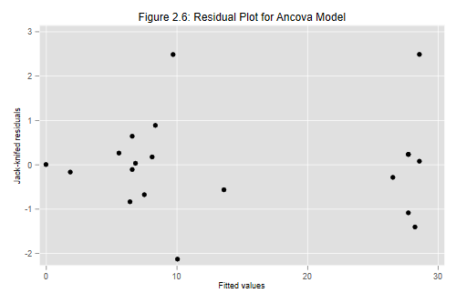
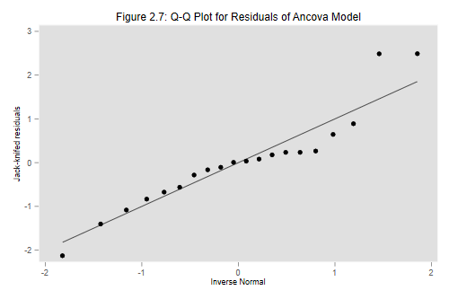

In this section we will be working with the additive analysis of covariance model of the previous section. As usual, we start by reading the data and recreating the variables we need. We then fit the model.
. use https://grodri.github.io/datasets/effort, clear
(Family Planning Effort Data)
. recode effort (0/4=1 "Weak") (5/14=2 "Moderate") ///
> (15/max=3 "Strong"), gen(effort_g) label(effort_g)
(20 differences between effort and effort_g)
. regress change setting i.effort_g
Source │ SS df MS Number of obs = 20
─────────────┼────────────────────────────────── F(3, 16) = 21.55
Model │ 2124.50633 3 708.168776 Prob > F = 0.0000
Residual │ 525.693673 16 32.8558546 R-squared = 0.8016
─────────────┼────────────────────────────────── Adj R-squared = 0.7644
Total │ 2650.2 19 139.484211 Root MSE = 5.732
─────────────┬────────────────────────────────────────────────────────────────
change │ Coefficient Std. err. t P>|t| [95% conf. interval]
─────────────┼────────────────────────────────────────────────────────────────
setting │ .1692677 .1055505 1.60 0.128 -.0544894 .3930247
│
effort_g │
Moderate │ 4.143915 3.191179 1.30 0.213 -2.621082 10.90891
Strong │ 19.44761 3.729295 5.21 0.000 11.54186 27.35336
│
_cons │ -5.954036 7.16597 -0.83 0.418 -21.14521 9.237141
─────────────┴────────────────────────────────────────────────────────────────
All of the diagnostic measures discussed in the lecture notes can be calculated in Stata and R, some in more than one way.
Let us start with the residuals. The easiest way to get them is as
options of the predict command. Specify the option
res for the raw residuals, rstand for the
standardized residuals, and rstud for the studentized (or
jackknifed) residuals. Let us obtain all three:
. predict ri, res . predict si, rsta . predict ti, rstu . label var ti "Jack-knifed residuals"
To get the diagonal elements of the hat matrix and Cook’s distance we
use two more options of predict, hat and
cook:
. predict hii, hat . predict di, cook
We are now ready to print Table 2.29 in the notes.
. list country ri si ti hii di, clean
country ri si ti hii di
1. Bolivia -.8322767 -.1689738 -.1637543 .2616128 .002529
2. Brazil 3.428229 .6573142 .645213 .1720945 .0224529
3. Chile .4416054 .0834989 .0808651 .1486769 .0003044
4. Colombia -1.527183 -.2913581 -.2828576 .1637904 .0041569
5. CostaRica 1.287944 .242732 .2354582 .1431063 .0024599
6. Cuba 11.44161 2.163383 2.490349 .1486769 .2043412
7. DominicanRep 11.29992 2.161597 2.487445 .1682585 .2363079
8. Ecuador -10.03862 -1.925296 -2.126719 .1725536 .1932498
9. ElSalvador 4.654061 .8956616 .8898143 .178205 .0434895
10. Guatemala -3.4996 -.6853749 -.6735727 .206462 .030554
11. Haiti .0296676 .0069303 .0067103 .4422478 9.52e-06
12. Honduras .1774703 .0355449 .0344175 .2412746 .0001004
13. Jamaica -7.219859 -1.361729 -1.402245 .1444142 .0782469
14. Mexico .90482 .1830367 .1774104 .2562359 .0028855
15. Nicaragua 1.443835 .2726553 .2646128 .1465179 .0031905
16. Panama -5.712056 -1.076521 -1.082269 .1431063 .0483857
17. Paraguay -.5717711 -.109629 -.1061877 .1720945 .0006246
18. Peru -4.402503 -.8410965 -.8330122 .1661363 .0352372
19. TrinidadTobago 1.287944 .242732 .2354582 .1431063 .0024599
20. Venezuela -2.593236 -.5752294 -.5628135 .3814295 .051009
Here is an easy way to find the cases highlighted in Table 2.29, those with standardized or jackknifed residuals greater than 2 in magnitude:
. list country ri si ti hii di if abs(si) > 2 | abs(ti) > 2, clean
country ri si ti hii di
6. Cuba 11.44161 2.163383 2.490349 .1486769 .2043412
7. DominicanRep 11.29992 2.161597 2.487445 .1682585 .2363079
8. Ecuador -10.03862 -1.925296 -2.126719 .1725536 .1932498
We will calculate the maximum acceptable leverage, which is 2p/n in general, and then list the cases exceeding that value (if any).
. scalar hiimax = 2*4/20
. list country ri si ti hii di if hii > hiimax, clean
country ri si ti hii di
11. Haiti .0296676 .0069303 .0067103 .4422478 9.52e-06
We find that Haiti has a lot of leverage, but very little actual
influence. Let us list the six most influential countries. I will do
this by sorting the data in descending order of influence and
then listing the first six. Stata’s regular sort command
sorts only in ascending order, but gsort can do
descending if you specify -di.
. gsort -di
. list country di in 1/6, clean
country di
1. DominicanRep .2363079
2. Cuba .2043412
3. Ecuador .1932498
4. Jamaica .0782469
5. Venezuela .051009
6. Panama .0483857
Turns out that the D.R., Cuba, and Ecuador are fairly influential observations. Try refitting the model without the D.R. to verify what I say on page 57 of the lecture notes.
On to plots! Here is the standard residual plot in Figure 2.6, produced using the following code:
. predict yhat
(option xb assumed; fitted values)
. label var yhat "Fitted values"
. scatter ti yhat, title("Figure 2.6: Residual Plot for Ancova Model")
. graph export fig26.png, width(500) replace
file fig26.png saved as PNG format

Exercise: Can you label the points coresponding to Cuba, the D.R. and Ecuador?
Now for that lovely Q-Q-plot in Figure 2.7 of the notes:
. qnorm ti, title("Figure 2.7: Q-Q Plot for Residuals of Ancova Model")
. graph export fig27.png, width(500) replace
file fig27.png saved as PNG format

Wasn’t that easy? Stata’s qnorm evaluates the inverse
normal cdf at i/(n+1) rather than at (i-3/8)/(n+1/4)
or some of the other approximations discussed in the notes. Of course
you can use any approximation you want, albeit at the expense of
additional work.
I will illustrate the general idea by calculating Filliben’s
approximation to the expected order statistics or rankits. I will use
Stata’s built-in system variables _n for the observation
number and _N for the number of cases.
. sort ti
. gen pi = (_n-0.3175)/(_N+0.365)
. replace pi = 1-0.5^(1/_N) if _n == 1
(1 real change made)
. replace pi = 0.5^(1/_N) if _n ==_N
(1 real change made)
. gen filliben = invnorm(pi)
. corr ti si filliben
(obs=20)
│ ti si filliben
─────────────┼───────────────────────────
ti │ 1.0000
si │ 0.9984 1.0000
filliben │ 0.9518 0.9655 1.0000
The correlation is 0.9518 using jack-knifed residuals, and 0.9655 using standardized residuals. The latter is the value quoted in the notes. Both are above (if barely) the minimum correlation of 0.95 needed to accept normality. I will skip the graph because it looks almost identical to the one produced above.
Updated fall 2022